키프레임 추출 — 여섯 판
2026-09-08 · 판마다 243프레임을 «전수» 재고 뽑았습니다 · 추가 집행 $0
🔴 앞 판을 고쳤습니다 — 「쓸 수 있는 것만 나오는가」에 답이 아니었습니다
처음 올린 페이지는 67장을 「채택」 한 이름으로 냈는데, 그중 26장(39%)이 자가 «못 잰» 장이었습니다. 자가 축으로 고른 장이 모자라면 시간축으로 «보충»하는데, 그 자리에 못 잰 장이 들어갔습니다.
그래서 둘로 갈랐습니다. 보충 로직 자체는 안 뺐습니다 — 빼면 좋은 각도가 같이 빠집니다(극단적 로우앵글·측면에서 검출기가 실패하는데, 그 장이 각도가 제일 벌어진 장입니다).
보는 법
- 🟢 A — 바로 쓸 수 있다 · 자가 재서 통과했습니다. 대표님이 물으신 「최종」이 이것입니다.
- 🟡 B — 자가 못 잰 것 · 반려가 아니라 «모름»입니다. 고개를 젖히거나 측면이면 얼굴 검출이 실패하는데, 그 장이 정확히 각도가 벌어진 장이라 버리지 않습니다.
- 물리 반려(눈 감음·프레임 잘림)는 애초에 둘 다에 안 옵니다.
■ 쓸수있다 ■ 눈감음 ■ 사람확인
🥇 오늘 고친 문구가 숫자로 나왔습니다
| 같은 회차·같은 여자 | 눈 감음 | 쓸 수 있다 |
|---|---|---|
| T11_ANG01 「눈을 뜨고 노래한다」 | 37장 | 56장 |
| T11_ANG02 「눈을 뜨고, 입은 다문다」 | 0장 | 177장 |
정본 둘이 부딪히고 있었습니다 — §1-y 는 「노래한다」를, PERFORM §7 은
「참조의 입은 다문다」를 요구했습니다. 눈과 입은 다른 축이라 갈라 적으니 쓸 수 있는 프레임이 3배가 됐습니다.
T11 한화 · 여자옛 문형 — 「눈을 뜨고 «노래한다»」
243프레임 전수 — 사람확인 150 · 쓸수있다 56 · 눈감음 37
🟢 A — 바로 쓸 수 있다 7장


🟡 B — 자가 못 잰 것 (사람이 봐야 한다) 4장
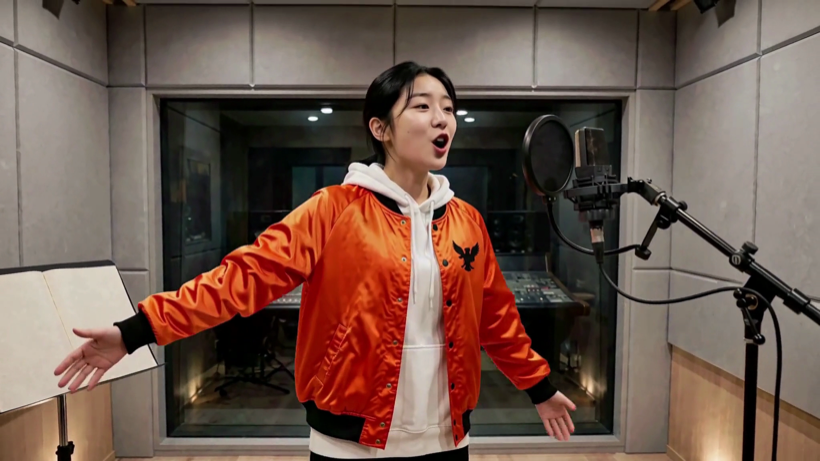
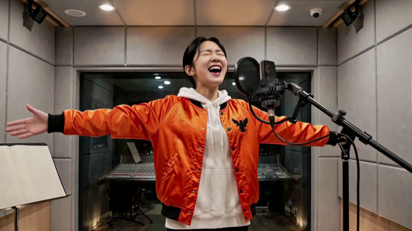
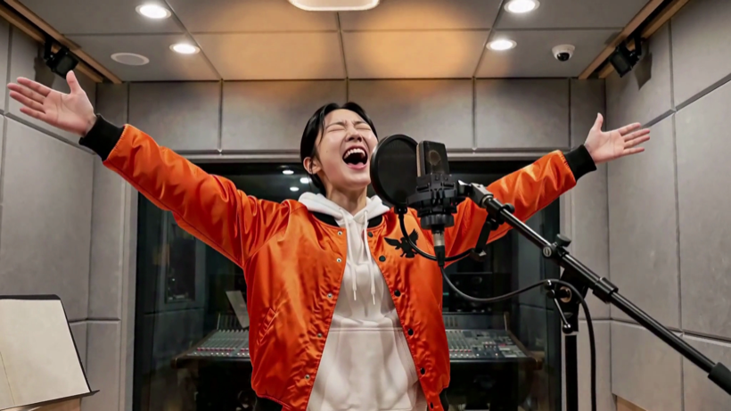

T11 한화 · 여자🆕 새 문형 — 「눈을 뜨고, 입은 «다문다»」
243프레임 전수 — 쓸수있다 177 · 사람확인 66
🟢 A — 바로 쓸 수 있다 11장
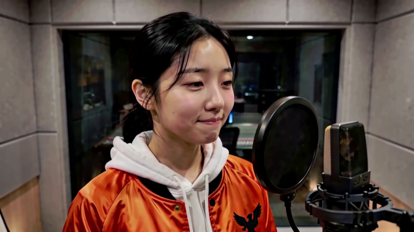

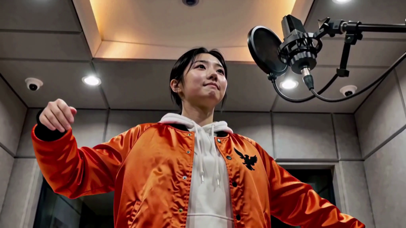
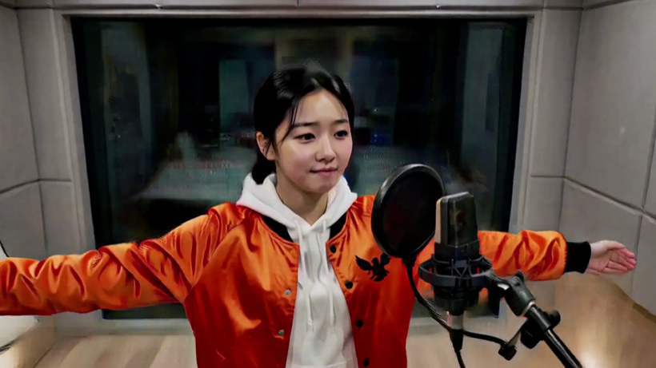


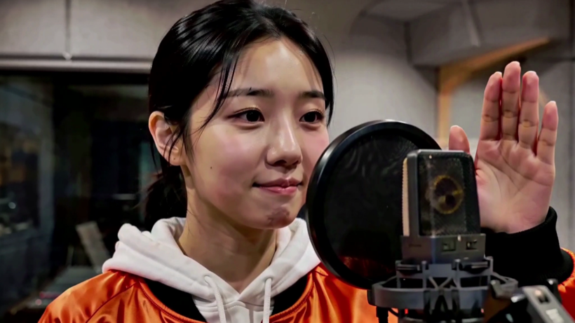


🟡 B — 자가 못 잰 것 (사람이 봐야 한다) 1장

T11 한화 · 남자🆕 새 문형 · 마이크 왼쪽
243프레임 전수 — 사람확인 192 · 쓸수있다 51
🟢 A — 바로 쓸 수 있다 4장
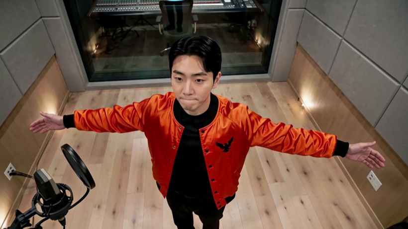


🟡 B — 자가 못 잰 것 (사람이 봐야 한다) 7장

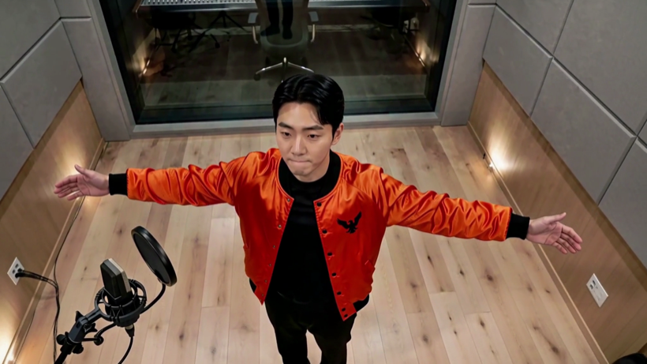
T15 · 여자옛 문형
243프레임 전수 — 사람확인 170 · 쓸수있다 73
🟢 A — 바로 쓸 수 있다 5장

🟡 B — 자가 못 잰 것 (사람이 봐야 한다) 6장

T15 · 남자🆕 새 문형 · 마이크 왼쪽
243프레임 전수 — 사람확인 178 · 쓸수있다 64 · 눈감음 1
🟢 A — 바로 쓸 수 있다 6장


🟡 B — 자가 못 잰 것 (사람이 봐야 한다) 5장

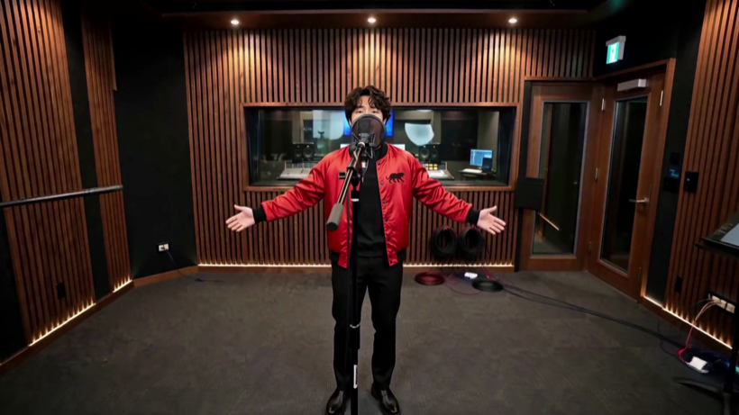

T18 · 남자옛 문형
243프레임 전수 — 쓸수있다 132 · 사람확인 111
🟢 A — 바로 쓸 수 있다 8장

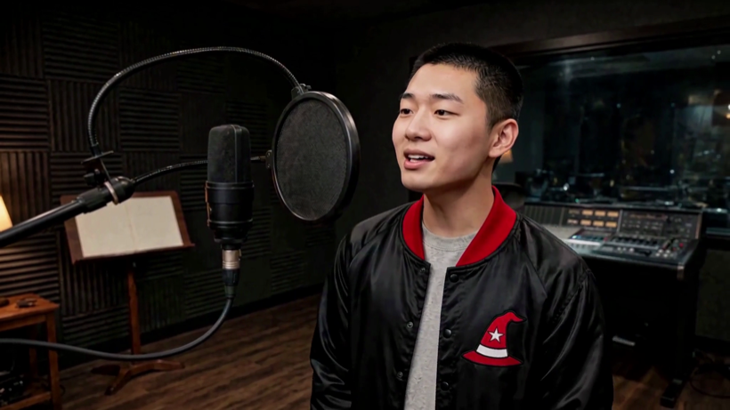
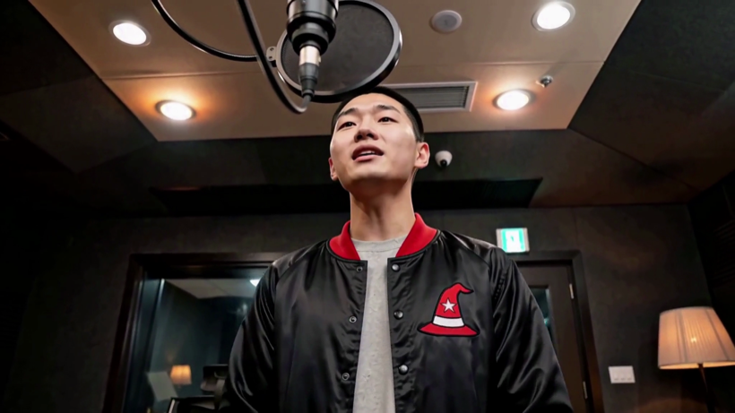


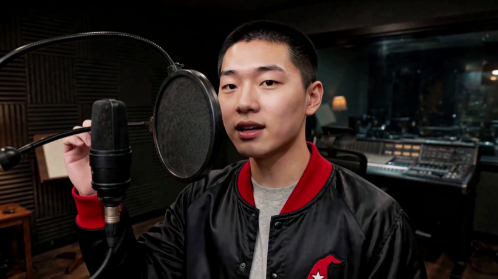

🟡 B — 자가 못 잰 것 (사람이 봐야 한다) 3장


🔬 같은 문형인데 판마다 다르게 나옵니다 — 표본 다섯
| 판 | 하드컷 | 배수 |
|---|---|---|
| T11 여 (ANG01) | 0개 | 1.9배 |
| T11 여 (ANG02) | 0개 | 4.7배 |
| T11 남 | 3개 | 14.6배 |
| T15 여 | 2개 | 7.5배 |
| T15 남 | 0개 | 4.7배 |
| T18 남 | 3개 | 13.1배 |
같은 시각·같은 LOCKED OFF 문장을 줬는데 0·2·3번이 나옵니다.
⇒ 이 문형은 「몇 번 갈라라」를 지정하지 못합니다.
🔴 아직 안 풀린 것 둘
- 마이크가 얼굴을 가립니다 — 축이 셋인데 정본은 «좌우»만 적고 있었습니다. T18 은 위아래(높이가 바뀌니 얼굴을 가로질렀다), T15 남자는 앞뒤(카메라가 마이크 뒤로 돌아가 화면 가운데로 왔다). 좌우로는 한 번도 안 넘어갔습니다. ⇒ 다음 판 문구: 「카메라와 그 사람 사이에 마이크가 오지 않는다」
- 화각이 넓어지면 방 목록 밖 물건이 나옵니다 — 표본 넷.
🔴 T18 과 T15 남자에서 「비상구 유도등」과 「문」이 그대로 겹칩니다 — 우연이 아니라
모델이 「녹음실」에서 같은 물건을 불러옵니다.
FRAME COVERAGE문장을 넣었는데도 났습니다.
대표님께 여쭐 것
- A 에서 판마다 쓸 번호를 골라 주십시오. B 에서 살리실 것이 있으면 그것도 번호로 주시면 됩니다.
- 이 장들로 컷 참조를 갈아 끼울지 — 지금 컷들은 각도가 하나인 옛 참조를 물고 있습니다.
⚠️ A 도 「대표님이 3분 보고 싶은 얼굴인가」는 못 답합니다 — 자가 답하는 것은 「물리적으로 쓸 수 있다」까지입니다.